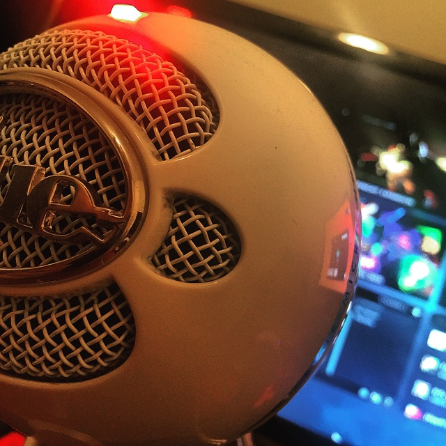

I am the gaming generation edging closer and closer to its expiration date. Until then, I am here to put my limited gaming skills to use for the betterment of all, through 100% donation charity streaming!
Hey all, My name is Fritz. I am a U.S. Army Veteran looking to put my meager gaming skills to use in hopes of some good will come out of them, (lets face it pro gaming is not in the cards). Though I am out of the army, I still work full time as a civilian consultant. My work allows me to do games and streaming in my free time.
Past Charities include: May 2019 Panthera: $250.00, June/July St. Jude's 2019: $135.00, Aug/Feb NAMI: $300.00, Mar/May Pets for Vets: $125.00
